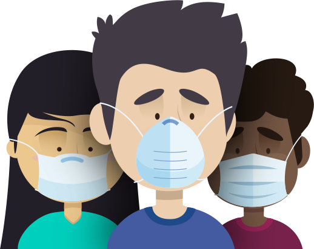

جائحة فيروس كورونا 2019-2020
فيروسات كورونا هي سلالة واسعة من الفيروسات التي قد تسبب المرض للحيوان والإنسان.
ومن المعروف أن عدداً من فيروسات كورونا تسبب لدى البشر أمراض تنفسية تتراوح حدتها
من نزلات البرد الشائعة إلى الأمراض الأشد وخامة مثل متلازمة الشرق الأوسط التنفسية
(ميرس) والمتلازمة التنفسية الحادة الوخيمة (سارس). ويسبب فيروس كورونا المُكتشف
مؤخراً مرض كوفيد-19.
مرض كوفيد-19 هو مرض معد يسببه آخر فيروس تم اكتشافه من سلالة فيروسات كورونا.
ولم يكن هناك أي علم بوجود هذا الفيروس الجديد ومرضه قبل بدء تفشيه في مدينة ووهان
الصينية في كانون الأول/ ديسمبر 2019. وقد تحوّل كوفيد-19 الآن إلى جائحة تؤثر على
العديد من بلدان العالم.
شنو هوا فيروس كورونا؟
شنو هوا كوفيد-19
كوفيد-19 هو سلالة جديدة من فيروس كورونا لم يتم التعرف عليها من قبل لدى البشر. تم التعرف عليه لأول مرة في ووهان بمقاطعة هوبي بالصين ، حيث تسبب في تفشي المرض بشكل كبير ومستمر. ومنذ ذلك الحين انتشر على نطاق أوسع في الصين. ومنذ ذلك الحين تم تحديد حالات في عدة بلدان أخرى. يرتبط فيروس كوفيد-19 ارتباطًا وثيقًا بفيروس كورونا الخفافيش.
الحماية
كيفاش تحمي راسك
الأعراض
تحقق من الأعراض الأساسية
استشارة
يمكن ليك تاخد استشارة اونلاين
بخصوص كوفيد-19
معلومات أكثر على فيروس كورونا
يرتبط SARS-CoV 2 ارتباطًا وثيقًا بفيروس SARS-CoV
يُعتقد أن أصله حيواني المصدر. أظهر التحليل الجيني أن الفيروس التاجي يتجمع وراثيًا مع جنس Betacoronavirus ، في النوع الفرعي Sarbecovirus (السلالة B) مع سلالتين مشتقات من الخفافيش. إنه مطابق بنسبة 96 ٪ على مستوى الجينوم الكامل لعينات فيروس كورونا الخفافيش الأخرى (BatCov RaTG13). في فبراير 2020 ، وجد الباحثون الصينيون أن هناك اختلافًا واحدًا فقط في الأحماض الأمينية في أجزاء معينة من تسلسل الجينوم بين فيروسات البنغولين وتلك الموجودة في البشر ، ومع ذلك ، وجدت مقارنة الجينوم الكامل حتى الآن بنسبة 92٪ ...


واش كتضن انه عندك أعراض الفيروس؟
دير الاختبار وفقًا للأعراض ديالك باش ترتاح.
إنتشار
كيفاش كينتاشر؟
ينتشر الفيروس بشكل رئيسي أثناء الاتصال الوثيق وعن طريق الرذاذ التنفسي الذي ينتج عند السعال أو العطس. قد يتم إنتاج قطرات من الجهاز التنفسي أثناء التنفس ولكن الفيروس لا ينتقل عبر الهواء بشكل عام.
الأعراض الأساسية
شنو هيا هاد الأعراض؟
تتمثل الأعراض الأكثر شيوعاً لمرض كوفيد-19:الحمى والإرهاق والسعال الجاف. الآلام والأوجاع، واحتقان الأنف، والصداع، والتهاب الملتحمة، وألم الحلق، والإسهال، وفقدان حاسة الذوق أو الشم، وظهور طفح جلدي أو تغير لون أصابع اليدين أو القدمين.
التهديد
كيفاش تمنعوا؟
حافظ على مسافة متر واحد على الأقل بينك وبين الآخرين .إذا كنت تقف قرب شخص يسعل أو يعطس، فإن الحفاظ على مسافة متباعدة عن الجميع هو فكرة جيدة إذا كنت في منطقة يسري فيها مرض كوفيد-19.
عندك شي سؤال؟
الأسئلة لي ديما كتسول

فيروسات كورونا هي سلالة واسعة من الفيروسات التي قد تسبب المرض للحيوان والإنسان. ومن المعروف أن عدداً من فيروسات كورونا تسبب لدى البشر أمراض تنفسية تتراوح حدتها من نزلات البرد الشائعة إلى الأمراض الأشد وخامة مثل متلازمة الشرق الأوسط التنفسية (ميرس) والمتلازمة التنفسية الحادة الوخيمة (سارس). ويسبب فيروس كورونا المُكتشف مؤخراً مرض كوفيد-19.
مرض كوفيد-19 هو مرض معد يسببه آخر فيروس تم اكتشافه من سلالة فيروسات كورونا. ولم يكن هناك أي علم بوجود هذا الفيروس الجديد ومرضه قبل بدء تفشيه في مدينة ووهان الصينية في كانون الأول/ ديسمبر 2019. وقد تحوّل كوفيد-19 الآن إلى جائحة تؤثر على العديد من بلدان العالم.
للوقاية من كوفيد-19، تفادى أي ملامسة جسدية عندما تحيي الآخرين. وتشمل التحيات المأمونة التلويح والإيماء والانحناء.
كلا. لا تقضي المضادات الحيوية على الفيروسات، وإنما تكافح العدوى البكتيرية فقط. وبما أن مرض كوفيد-19 منشؤه فيروس، فإن المضادات الحيوية لا تنفع في مكافحته. ولا ينبغي استعمال المضادات الحيوية كوسيلة للوقاية من مرض كوفيد-19 أو علاجه. ولكن قد يصف الأطباء في المستشفى المضادات الحيوية للمرضى المصابين بمضاعفات كوفيد-19 الوخيمة لمعالجة عدوى بكتيرية ثانوية أو الوقاية منها. وينبغي التقيد بصرامة بتعليمات الطبيب لدى استعمال المضادات الحيوية لعلاج حالات العدوى البكتيرية.
عدوى الفبروس لها نفس علامات وأعراض نزلات البرد ولا يمكنك تمييزها إلا من خلال الاختبارات المعملية لتحديد نوع الفيروس.